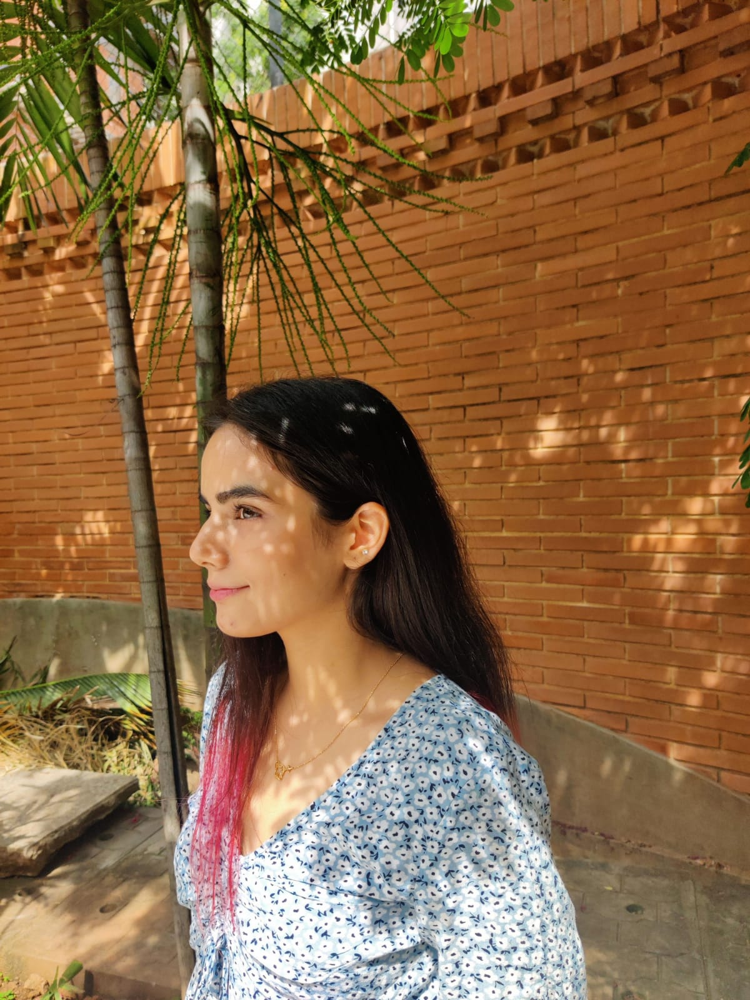

A LITTLE ABOUT US


Hey! We are Noor (on the left) and Nidhi (on the right) and we are glad you are here. Welcome to our website!
We are second year interaction design students at PES University, Bangalore. As a part of a college assignment, we have created an online tool which allows you to put vintage filter on any picture. We hope you have fun playing around with this tool! If you have any queries or suggestions, feel free to contact us on noorsehgal18@gmail.com and nidhimuralikrishnan@gmail.com